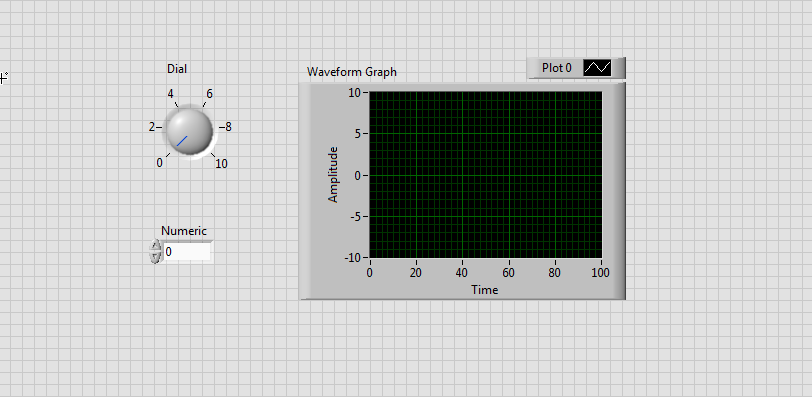
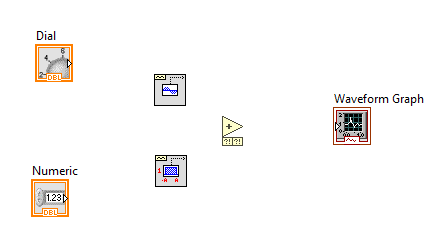
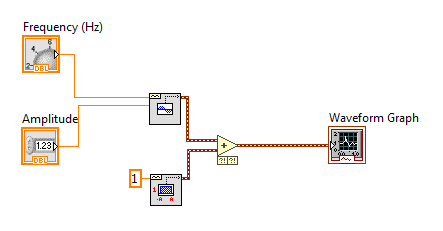
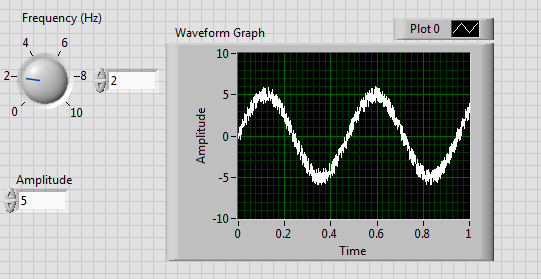
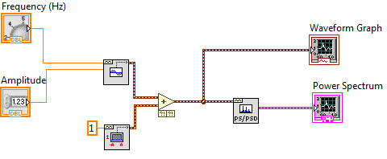
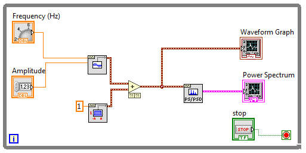

ELEC 240 Lab
Experiment 5.1
Virtual Instruments with Labview
Equipment
- Lab PC
Part A: Generating a Signal
In this section, you will learn how to use the software Labview (installed on your lab PC) to analyze the frequency content of a signal. The frequency content can be viewed by plotting the signal's frequency spectrum. The spectrum of a sine wave should be pretty boring. By definition it consists of a single component at the fundamental frequency whose amplitude is equal to the amplitude of the waveform. Nevertheless, it is useful being able to see the amplitude and frequency in a single picture, as well as being able to assess how "pure" (i.e. how truly sinusoidal) the purported sine wave actually is.
- From the Start menu, open the program NI Labview 2016. Click on Start Labview.
-
In the window that opens up, select Create Project, and then select Blank VI.
Note
VI stands for Virtual Instrument. Labview is a versatile software tool that allows you to custom-build instrumentation that can acquire, generate, process, and analyze signals according to your design needs.
-
Two windows will pop up, one titled Front Panel and the other titled Block Diagram. Let's first create the Front Panel of your virtual instrument, so bring that window to the foreground, which should also bring up a Controls palette window.
Note
If the Controls palette does not pop up automatically, you can open it by selecting View \(\rightarrow\) Controls Palette, or by right-clicking on a blank area of the front panel.
-
The Controls palette contains objects that can be added to form the user interface. There are two types of objects: controls and indicators. A control is an input from the user that gets passed to the virtual instrument, while an indicator is an output display (numeric or plot), from the virtual instrument. From the Controls palette, select Modern \(\rightarrow\) Numeric \(\rightarrow\) Dial. Left-click on the Front Panel to place the dial onto the panel.
-
Next, place a Numeric Control from the Numeric subpalette.
-
Then from the Control palette, select Modern \(\rightarrow\) Graph \(\rightarrow\) Waveform Graph. Your Front Panel should like the figure below:
 Note
Waveform Graph accepts and plots an array of data values all at once. This is different from Waveform Chart, which scrolls data continuously and refreshes the display as new data is added.
-
Now click on the Block Diagram window to bring it up. You should see three nodes already placed on it, which correspond to the objects placed on the Front Panel.
Note
Notice the small black arrows which indicate the direction of data flow (into or out of the node). Nodes are color-coded, which indicates the data type. In this case, the nodes are orange, the color code for floating point. The DBL marking indicates double precision.
-
You should now see a Functions palette in place of the Control palette. Under the Programming subpalette, select Waveform \(\rightarrow\) Analog Wfm \(\rightarrow\) Generation \(\rightarrow\) Sine Wfm and place it on the Block Diagram.
Note
Waveform is a unique cluster data type of Labview that contains three elements of information. The first element is an array of signal amplitude values, the second is the start time of the signal, and the third is the time interval between data points. Bundling many different kinds of information such as the waveform data type is called a cluster data type.
-
From the same Generation menu, place a Uniform White Noise block on your Block Diagram.
-
Add one more block to your diagram, the Add block, located at Programming \(\rightarrow\) Numeric \(\rightarrow\) Add. Your Block Diagram should look something like this:
 -
When you hover the mouse pointer over any block, you will see that all the input and output pins appear. When you hover over any of these pins, the mouse pointer symbol changes to look like a spool of wire. Click on the Dial output pin (orange) and wire it to the Frequency input pin of the Sine Waveform block.
Wiring Tips
- While wiring, you can left-click to lock the wire in place and continue to route the wire the way you want to.
- Move wires around by clicking and dragging.
- Escape wiring mode by right-clicking, or just delete the undesired wire with Delete.
- Remove all broken wires from the Block Diagram by pressing Ctrl-B.
- Make your wiring look pretty by right-clicking a wire and selecting Clean Up Wire.
-
Wire the Numeric Control to Amplitude to the Amplitude pin of Sine Waveform.
-
Change the
Diallabel toFrequency (Hz), andNumericlabel toAmplitudeby double-clicking the labels. -
Right-click on the amplitude input of the Uniform White Noise Waveform block and select Create \(\rightarrow\) Constant. The default constant will be 1 which is what we will use.

Note
You can change a constant by double-clicking the value. However, while a VI is running, a constant cannot be changed.
-
Finish wiring your block diagram so that it looks like this:
 Note
The maroon wire indicates the information passed is of the waveform data type.
-
Check if the Run button at the top left of the screen is a white arrow. If it looks like a broken gray arrow, there is some error in your block diagram (i.e., such as broken wires).
-
In the Front Panel, set your frequency to 2 Hz, and amplitude to 5. Press the white arrow Run. You should see a waveform like displayed below.
 Note
You can numerically enter the frequency if you want by right-clicking the dial, and selecting Visible Items \(\rightarrow\) Digital Display.
Part B: Creating a Spectrum Analyzer
-
Next we will perform a frequency spectrum analysis on this noisy sine wave using a built-in Labview Power Spectrum function that uses the Fast Fourier Transform (FFT) algorithm. Go to the Block Diagram window and add the FFT Power Spectrum block located at Waveform \(\rightarrow\) Analog Wfm \(\rightarrow\) Measurements \(\rightarrow\) FFT Power Spectrum and PSD. Place this block in your Block Diagram, and add a new Waveform Graph to your Front Panel. Label your new graph as Power Spectrum, and change the x-axis label to Frequency.
 Note
The pink wire indicates a generic cluster data type.
-
In order to make our spectrum analyzer capable of handling changing signals, we will add a while loop around the block diagram so it runs continuously until the VI is stopped. In the Functions palette, go to Programming \(\rightarrow\) Structures \(\rightarrow\) While Loop, click once at the top left of your block diagram, and draw a loop around your block diagram.
-
In the Front Panel window, place a Stop button control under Modern \(\rightarrow\) Boolean \(\rightarrow\) Stop Button. A Stop node should be automatically placed on your block diagram. Move it near the red dot (Loop Condition) and connect the Stop node to it.
 -
In the Front Panel, change the frequency range to 0-500Hz by double-clicking on the dial's highest marking.
-
Set the dial to 200 Hz and Run. Take a screenshot of the spectral plot.
-
Turn the dial to various frequencies and comment on how the spectral plot changes. You can stop the VI by pressing the Stop button.
-
Now let's find out what the other built-in features of the Power Spectrum block are. Go to your Block Diagram and right-click on the window pin. Select Create \(\rightarrow\) Control. This will drop a control object labeled
windowon your Front Panel. Do the same for thedB Onandaveraging parameterspins. Play around with the different controls you created and comment on how the different settings affect your spectral plot. -
Take a screenshot of the Block Diagram and Front Panel of the spectrum analyzer you have just built.